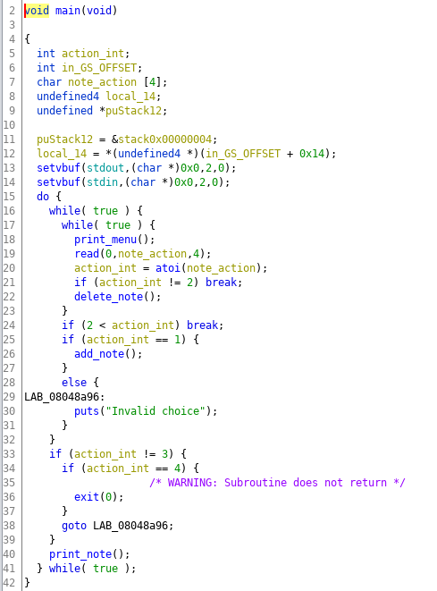
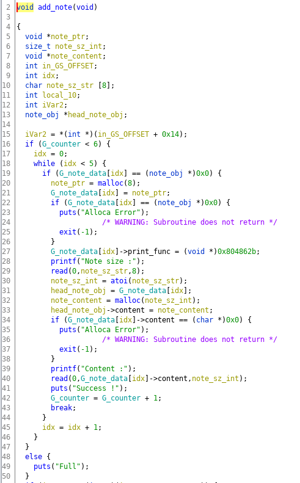

Binary Exploitation [pwnable.tw] - HackNote
Challange Description
| Name | hacknote |
| Points | 200 |
| Solves | 1101 times |
| Libc | 2.23 |
| Category | Exploitation |
| Description | A good Hacker should always take good notes! |
Binary Protection
Let’s check the binary protection
Challenge Application
It’s a simple note-taking application, where it can store up to 6 notes and if you want to store a new note you will have to delete existing and store it on that index. You can add, remove and print the note. When you create a new note a note struct is created with malloc and note struct have two field one the note content and other is the pointer to function which prints the note content.

Create note function first does a malloc for note_obj struct which is 8 byte in size and then prompts the user for note size which is allocated with malloc and then reads the content from the user, proper bounds check is done while reading the content so its safe from overflow.

The delete note function first free’s the note content memory chunk and then free’s the note_obj struct.
Application Constraints
There are a couple of constraints which will help us to craft the exploit:
- We can allocate and free a memory chunk of the size which we can fully control.
- We can control the content of the memory chunk.
- We can create and store references of 6 memory chunk of the size which we control.
Vulnerability
The vulnerability is in delete note function where note pointer stored in global note array is not nulled after freeing, this leads to use-after-free vulnerability. We can use this vulnerability to do duplicate fastbin attack.
The Leak
In the application, we can control the size of the note content and we can print it. So we can use the combination of this to leak the main arena address. We can allocation a memory chunk of size(200 bytes) such that on executing a free operation it will be stored in the unsorted bin. The unsorted bin is a doubly-linked list and it stored next(fd) and previous(bk) memory chunk address and the first and last memory chunk stores the pointer to main arena address.
So effectively we can allocate a memory chunk of size 200 bytes then free the memory chunk, then allocate the same memory chunk. When we get the same memory chunk back it has the fd and bk pointer populated, if we carefully overwrite only the first 4 bytes and print the content, it will print the main arena address along with the note content. If we parse the note content we can recover the arena address in hex format.
The main arena struct is at a fixed offset from the libc base so if we subtract the offset from the arena address which we just got note content we can recover the libc base address.
Arbitrary Code Execution
The next task is how do get execute shell-poping code. If you must have observed the note_obj struct stores the pointer to a function which prints note. If we can change the pointer of the function to libc system function and invoke the print function such the ‘sh’ is passed as the first parameter to function, then we can get the shell.
The above method can be executed using the use-after-free vulnerability which we discussed earlier. The main idea is that we do double-free note memory chunk which will put duplicate bins in the fastbin freelist. Next, when we create new note we should make allocation such that the first chunk is allocated for note_obj struct and in the next allocation, the duplicate chunk is allocated as note content. And when we write the note content we get an opportunity to overwrite the note_obj struct. At this stage, we will overwrite it print_fun with system address and the content of the note will be ;sh; and then we execute print function this will print the content of the note. On printing the content it will execute system("<system_addr>;sh;") which will give use shell.
Exploit Code
Below is the full working exploit of what we discussed above.
1 |
|